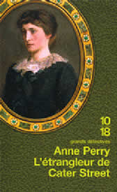

|
 |


|
|
|
||||
 |
|
|
| CHAPITRE PREMIER
|
||
Charlotte Ellison se tenait
au milieu du salon désert, le journal à la main. Son père
avait commis l'imprudence de le laisser traîner sur la desserte.
Il désapprouvait ce genre de lecture, préférant lui
fournir des informations qui lui semblaient mieux convenir à l'éducation
d'une jeune fille. Cela excluait les scandales, d'ordre politique ou personnel,
les controverses de toute nature et, bien entendu, les crimes : tout ce
qui, en fait, présentait un intérêt !
Aussi Charlotte devait-elle se procurer les journaux à l'office où Maddock, le majordome, les gardait pour les lire avant de les jeter. Elle avait donc toujours au moins un jour de retard sur le reste des Londoniens. Quoi qu'il en soit, elle avait un quotidien du 20 avril 1881 entre les mains, donc un journal du jour. La nouvelle la plus remarquable était celle de la mort de Mr. Disraeli, la veille. Charlotte se demanda comment réagissait Mr. Gladstone. Éprouvait-il une sensation de vide ? Un ennemi juré occupe-t-il une place aussi grande dans la vie d'un homme qu'un véritable ami ? Certainement, oui. Dans le tissu des émotions, l'ennemi correspond à une erreur dans la trame. Charlotte entendit des pas dans l'entrée et rangea très vite le journal. Elle n'avait pas oublié la colère de son père, le jour où il l'avait surprise en train de lire un quotidien du soir, trois ans plus tôt. Il s'agissait d'un article sur cette affaire de diffamation entre Mr. Whistler et Mr. Ruskin. C'était donc différent. Cependant, lorsqu'elle avait émis le désir d'en savoir plus sur la guerre des Zoulous, racontée par des journalistes présents sur les lieux, son père s'était montré tout aussi intraitable. Pour finir, ç'avait été Dominic, le mari de sa sœur, qui l'avait régalée de savoureux récits. Hélas, chaque fois avec un jour de retard ! La pensée de Dominic chassa celle de Mr. Disraeli et de la presse en général. Dominic la fascinait depuis le jour où il était entré dans cette maison pour la première fois, voilà six ans. Sarah avait vingt ans, Charlotte, dix-sept, et Emily, treize. Évidemment, il venait voir Sarah. Si Charlotte s'installait au salon avec sa mère, c'était uniquement pour que le jeune homme puisse faire sa cour dans les règles. Dominic la voyait à peine, ne lui adressait que des banalités. Il regardait Sarah, sa chevelure blonde, son visage à l'ossature délicate. Charlotte, avec sa crinière de cheveux auburn, si difficiles à coiffer, ses traits plus marqués, n'était qu'un fardeau qu'on supportait poliment. Un an plus tard, Dominic et Sarah s'étaient mariés. Dominic avait perdu de son mystère. Il n'était plus le personnage principal de la rêverie amoureuse d'une autre. Cependant, après cinq ans de cohabitation dans cette grande maison, après qu'ils se furent découverts l'un l'autre, son charme, la fascination du premier jour continuaient à opérer sur elle. C'étaient ses pas qu'elle venait d'entendre. Elle le sut d'instinct. Cela faisait partie de sa vie : guetter le bruit de ses pas, le voir avant tout le monde dans une assemblée, se souvenir de tout ce qu'il disait, y compris les choses sans importance. Charlotte avait finalement accepté cette situation. Dominic avait toujours été hors d'atteinte. Ce n'était pas comme s'il avait éprouvé un sentiment pour elle, ou qu'il eût pu l'aimer. Elle n'avait jamais espéré cela. Un jour, peut-être, elle rencontrerait quelqu'un qu'elle pourrait aimer et respecter, quelqu'un de bien. Mère parlerait avec ce monsieur, verrait si sa personnalité et son milieu social pourraient lui convenir. Et, bien entendu, père procéderait à tous les autres arrangements, comme il l'avait fait avec Dominic et Sarah et le ferait sans nul doute pour Emily et l'élu de son cœur, le moment venu. Charlotte préférait ne pas y penser. Cette perspective relevait d'une espèce de futur éternel. Le présent, c'était Dominic, cette maison, ses parents, Emily et Sarah, et grand-mère. Le présent, c'était tante Susannah qui viendrait prendre le thé dans deux heures, et le fait que les pas, dans le couloir, s'étaient éloignés. Charlotte pouvait donc jeter à nouveau un coup d'œil sur le journal. Sa mère arriva quelques minutes plus tard, si discrètement que la jeune fille ne l'entendit pas. – Charlotte ! Trop tard pour cacher son occupation. Elle baissa le journal, croisant le regard noisette de sa mère. – Oui, maman. Elle admettait avoir transgressé un interdit. – Tu sais ce que ton père pense de ce genre de lecture. Sa mère jeta un coup d'œil sur le journal plié. – Je ne comprends pas pourquoi tu t'intéresses à ça. C'est rarement très plaisant à lire. Et de toute façon, ton père nous transmet les informations. Mais si tu y tiens absolument, fais-le discrètement. Va à l'office ou demande à Dominic de t'en parler. Charlotte rougit, détourna les yeux. Sa mère savait donc qu'elle lisait les journaux de Maddock, et que Dominic lui racontait les nouvelles. Le jeune homme le lui avait-il dit ? Pourquoi cette pensée la heurtait-elle, comme si on l'avait trahie ? C'était ridicule. Il ne pouvait y avoir aucun secret entre elle et Dominic. Que s'était-elle permis d'imaginer ? – Oui, maman. Pardonnez-moi. Elle laissa tomber le journal sur la table derrière elle. – Je ne me laisserai pas surprendre par papa. – Si tu veux lire, pourquoi ne prends-tu pas un livre ? Il y a un roman de Mr. Dickens dans la bibliothèque. Et puis, je suis sûre que tu n'as pas encore lu Coningsby, de Mr. Disraeli. C'était curieux, cette manie de dire « je suis sûr » quand, justement, on ne l'était pas. – Mr. Disraeli est mort hier, répondit Charlotte. Je ne pourrais pas apprécier ce livre. Enfin, pas tout de suite. – Mr. Disraeli ? Oh ! chérie, je suis désolée. Je n'ai jamais aimé Mr. Gladstone, mais ne le dis pas à ton père. Il me fait penser au pasteur. Charlotte réprima l'envie de rire. – Vous n'aimez pas le pasteur, maman ? Sa mère se reprit immédiatement. – Bien sûr que si. Maintenant, va te préparer pour le thé. Tu as oublié que tante Susannah vient nous voir cet après-midi ? – Mais elle ne sera là que dans une heure et demie au plus tôt, protesta Charlotte. – Alors fais de la broderie ou continue ce tableau sur lequel tu travaillais hier. – Je l'ai cochonné... – Charlotte ! On dit : « Je l'ai raté. » Tu ferais peut-être mieux de finir les mitaines. Tu pourrais les porter demain à la femme du pasteur. Je les lui ai promis. – Vous croyez vraiment qu'elles font plaisir aux pauvres ? – Aucune idée. Le visage de sa mère se détendit : c'était visiblement la première fois qu'elle se posait la question. – Au fond, je n'ai jamais rencontré un vrai pauvre, dit-elle. Mais le pasteur nous a assuré que ces mitaines étaient utiles. Nous sommes donc obligées de le croire. – Même si nous ne l'aimons pas beaucoup. – Charlotte, ne sois pas impertinente, s'il te plaît. Ce fut dit sans aucune brusquerie. Sa mère s'était involontairement trahie, certes, mais elle ne s'en formalisait pas. Si elle en voulait à quelqu'un, c'était à elle-même, et non à Charlotte. Obéissante, Charlotte sortit de la pièce et monta à l'étage. Autant finir ces mitaines, se dit-elle. Puisqu'il fallait le faire. Dora, la fille de cuisine, servit le thé dans le grand salon. C'était un rituel des plus imprévisibles. Qui, lorsqu'elles étaient à la maison, avait toujours lieu à quatre heures, et toujours dans cette pièce avec ses meubles vert pâle, ses hautes fenêtres qui donnaient sur la pelouse. Les fenêtres étaient fermées à présent, même si le soleil de printemps brillait sur l'herbe et sur les dernières jonquilles. Le jardin était petit, quelques mètres de gazon, un massif de fleurs, un fin bouleau adossé à la maison. Sur le mur de briques, des roses grimpantes, les préférées de Charlotte. Ces roses rayonnaient de toute leur splendeur de juin à novembre. On les voyait éclore de façon indisciplinée, telles des volées de fleurs et de feuilles. Puis elles inondaient le sol de pétales colorés. En fait, le rituel du thé demeurait immuable ; c'étaient les protagonistes qui changeaient. Soit elles rendaient visite à quelqu'un, se perchaient sur des chaises inconnues, dans un autre grand salon, et entretenaient une conversation un peu empruntée. Soit l'une d'elles recevait des invités. Sarah conviait de jeunes couples, très ennuyeux selon Charlotte. Les amies d'Emily étaient un peu moins insipides, parlaient de mode, se lançaient dans des spéculations romantiques – qui courtisait, ou allait courtiser qui. Les amies de maman étaient compassées, imbues d'elles-mêmes, à deux exceptions près. Ces dernières avaient tendance à évoquer des souvenirs qui intéressaient Charlotte. Elles racontaient l'histoire d'anciens soupirants, morts depuis bien longtemps, en Crimée, à Sébastopol, à Balaklava. Puis elles parlaient de la charge de la Brigade légère et des rares soldats qui en étaient revenus. On relatait également, avec un mélange d'admiration et de désapprobation, les actes de Florence Nightingale, « si peu féminine, mais il faut bien rendre hommage à son courage, ma chère ! Ce n'est pas une dame, certes, mais une Anglaise dont on peut être fiers ! ». Quant aux amies de grand-mère, elles étaient encore plus passionnantes. Non pas que Charlotte les aimât : c'étaient pour la plupart des vieilles dames singulièrement désagréables. Mais Mrs. Selby, qui avait plus de quatre-vingts ans, se souvenait de Trafalgar, de la mort de Lord Nelson, des rubans noirs dans les rues, des lisérés noirs des journaux. Enfin, elle prétendait s'en souvenir. Elle parlait fréquemment de Waterloo, du grand-duc, des scandales liés à l'impératrice Joséphine, du retour de Napoléon exilé à l'île d'Elbe, des Cent Jours. Elle avait glané la plupart de ces informations dans des salons comme le leur, peut-être un peu plus austères, plus dépouillés, d'un style néoclassique. Cependant, cette réalité-là, plus vivante, fascinait Charlotte. Aujourd'hui, on était en 1881, à mille lieues de ces histoires. Mr. Disraeli venait de mourir. Les rues s'éclairaient au gaz ; les femmes étaient admises dans les universités de Londres ! La reine était impératrice des Indes, et l'empire lui-même s'étirait jusque dans les coins les plus reculés du globe. Wolfe et les plaines d'Abraham, Clive et Hastings en Inde, Livingstone en Afrique, et la guerre des Zoulous appartenaient au passé. Le prince consort était mort du typhus depuis vingt ans. Gilbert et Sullivan écrivaient des opérettes, comme H.M.S. Pinafore. Qu'aurait dit l'empereur Napoléon de tout ça ? Aujourd'hui, Mrs. Winchester était venue voir maman – quel ennui ! – et tante Susannah leur rendait visite à tous – quelle joie ! Susannah était la plus jeune sœur de papa. Elle n'avait que trente-six ans, dix-neuf ans de moins que son frère et seulement dix de plus que Sarah. Elle avait davantage l'air d'une cousine que d'une tante. Voilà trois mois qu'ils ne l'avaient pas vue, trois mois de trop. Elle était allée voir des parents dans le Yorkshire. – Racontez-moi tout, ma chère, dit Mrs. Winchester en se penchant vers elle, l'œil brillant de curiosité. Qui sont les Willis, exactement ? Je suis sûre que vous avez dû me le dire – assurance sublime que tout le monde lui disait tout ! –, mais ma mémoire n'est plus ce qu'elle était. Mrs. Winchester attendit avec avidité, les sourcils arqués. Susannah était un sujet de fascination pour elle : ses allées et venues, le moindre signe d'une aventure amoureuse, voire scandaleuse. Son existence même s'y prêtait : mariée à vingt et un ans à un gentleman de bonne famille, lequel s'était fait tuer, un an plus tard, en 1866, dans les émeutes de Hyde Park. L'homme lui avait laissé une jolie fortune, une affaire bien gérée. Elle était alors encore très jeune et extrêmement belle. Malgré une foule de prétendants, Susannah ne s'était jamais remariée. L'opinion oscillait entre deux pôles opposés : pour les uns, elle restait fidèle à la mémoire de son mari, et, tout comme la reine, n'avait jamais pu surmonter sa douleur ; pour les autres, son mariage avait été un épisode si pénible qu'elle n'avait nulle envie de renouveler l'expérience. L'opinion de Charlotte se situait à mi-chemin entre ces deux extrêmes. Elle pensait qu'après avoir satisfait aux exigences de sa famille et de son milieu en contractant un mariage, Susannah n'avait plus le désir de s'engager à nouveau, à moins de rencontrer l'amour – ce qui à l'évidence ne s'était pas encore produit. – Mrs. Willis est une cousine, du côté de ma mère, répondit Susannah avec un léger sourire. – Oh ! mais oui ! s'exclama Mrs. Winchester en se calant contre le dossier de son siège. Et que fait Mr. Willis, je vous prie ? Je suis sûre que cela va m'intéresser. – Il est pasteur dans un petit village, répondit Susannah poliment. Son regard amusé croisa celui de Charlotte. – Ah !... Mrs. Winchester s'efforça de masquer sa déception. – Comme c'est charmant ! dit-elle. Vous avez pu les aider à la paroisse, j'imagine. Voilà qui devrait encourager notre cher pasteur. Et l'infortunée Mrs. Abernathy. Ca lui changerait les idées, d'entendre parler des pauvres à la campagne. Charlotte se demanda en quoi la campagne ou les pauvres pouvaient réconforter qui que ce soit, a fortiori Mrs. Abernathy. – Oh ! oui, renchérit sa mère. Ce serait parfait. – Tu pourrais lui apporter des confitures, ajouta grand-mère en hochant la tête. C'est toujours agréable de recevoir des confitures. Ca prouve qu'on pense à vous. Or les gens ont moins de considération pour les autres que de mon temps. Ca vient de toute cette violence, tous ces crimes. Ca finit forcément par vous changer. Et puis cette indécence ! Ces femmes qui se conduisent comme des hommes, qui désirent des tas de choses qui ne sont pas bonnes pour elles. Bientôt les poules vont chanter dans les poulaillers ! – Pauvre Mrs. Abernathy, acquiesça Mrs. Winchester. – Mrs. Abernathy a été malade ? s'enquit Susannah. – Évidemment ! dit grand-mère d'un ton sec. Que croyais-tu, mon enfant ? C'est ce que je n'arrête pas de dire à Charlotte. Elle darda un regard perçant sur sa petite-fille. – Charlotte et toi, vous êtes pareilles ! Cette accusation s'adressait à Susannah. – J'ai toujours rendu Caroline responsable du comportement de Charlotte. Elle fit le geste de congédier sa belle-fille de sa petite main potelée. – Mais naturellement, je ne puis rien lui reprocher te concernant. C'est la faute de notre époque. Et de ton père, qui n'était pas assez sévère avec toi. Mais au moins, tu ne lis pas ces horribles journaux qui entrent dans cette maison. J'étais trop vieille quand je t'ai eue. Il n'en est rien sorti de bon. – Je ne crois pas que Charlotte consulte autant la presse que vous l'imaginez, maman, répliqua Susannah. – Combien de fois faut-il lire ce genre de choses pour que le mal soit fait ? demanda grand-mère. – Ils sont tous différents, maman. – Comment le sais-tu ? s'enquit grand-mère, rapide comme l'éclair. Susannah ne perdit pas contenance. Seules ses joues rosirent. – Ils publient les nouvelles, maman. Qui changent d'un jour à l'autre. – Sottises ! Ils publient les récits des crimes et des scandales. Le péché est resté le même depuis que Notre Seigneur l'a autorisé au jardin d'Éden. Cela sembla clore la conversation. Il y eut plusieurs minutes de silence. – Tante Susannah, dit finalement Sarah, vous voulez bien nous parler du Yorkshire ? La campagne est-elle belle ? Je n'y suis jamais allée. Peut-être que les Willis nous permettraient, à Dominic et moi... Elle laissa sa phrase en suspens. Susannah sourit. – Je suis sûre qu'ils seraient ravis. Mais j'imagine mal Dominic prenant plaisir à la vie rurale. Il m'est toujours apparu comme un homme trop... cultivé, pour rendre visite aux pauvres et aller à des thés. – Ca a l'air drôlement ennuyeux, lâcha Charlotte sans réfléchir. Surpris, les autres la dévisagèrent d'un air réprobateur. – Tout à fait le genre d'ambiance qu'il faudrait à Mrs. Abernathy, dit Mrs. Winchester, hochant la tête avec une expression pénétrée. Ca lui ferait du bien, à cette pauvre femme. – Il peut faire extrêmement froid dans le Yorkshire, en avril, observa Susannah en regardant ces dames l'une après l'autre. Si Mrs. Abernathy a été malade, ne pensez-vous pas qu'il serait préférable de l'envoyer là-bas en juin ou juillet ? – Le froid n'est pas un problème ! dit grand-mère d'un ton cinglant. C'est très revigorant. Très sain. – Pas si on a été malade... – Tu me contredis, Susannah ? – J'essaie, maman, de vous expliquer que le Yorkshire, au début du printemps, n'est pas le lieu de séjour idéal pour une personne à la santé délicate. Loin de la revigorer, ce climat pourrait bien lui donner une pneumonie. – Eh bien, au moins elle aurait autre chose à penser ! décréta grand-mère. – Pauvre chère âme, ajouta Mrs. Winchester. Quitter Londres, même pour le Yorkshire, ne peut être qu'un mieux. Ca la mettra dans un autre état d'esprit. – Pourquoi, qu'est-ce qui ne va pas ici ? s'enquit Susannah en regardant Mrs. Winchester, puis Charlotte. J'ai toujours trouvé cet endroit particulièrement agréable. Nous avons tous les avantages de la ville sans souffrir de la promiscuité ni des prix exorbitants pratiqués dans des quartiers plus chic. Nos rues sont propres. Et nous sommes à une distance raisonnable de tout ce qui présente un quelconque intérêt, sans parler de nos amis. Mrs. Winchester se tourna vers elle. – Évidemment, vous, vous êtes partie ! s'exclama-t-elle sur un ton accusateur. – Deux mois seulement ! Le quartier ne peut pas avoir changé à ce point-là en si peu de temps. Cette remarque était ironique, sarcastique même. – Combien de temps ça prend ? Mrs. Winchester haussa les épaules de façon dramatique et ferma les yeux. – Oh ! pauvre Mrs. Abernathy ! Comment peut-elle supporter d'y penser ? Pas étonnant que la pauvre âme ait peur de s'endormir. Déconcertée, Susannah regarda Charlotte, qui décida de lui venir en aide, quitte à en supporter les conséquences. – Vous vous souvenez de Chloé, la fille de Mrs. Abernathy ? Charlotte n'attendit pas de réponse. – Elle a été assassinée il y a six semaines. Étranglée. On lui a arraché ses vêtements et tailladé la poitrine. – Charlotte ! Caroline lança un regard furieux à sa fille. – On ne va pas parler de ça ! – On en parle depuis le début de l'après-midi, maman, protesta Charlotte. Du coin de l'œil, elle vit Emily pouffer de rire en cachette. – On l'a juste évoqué à mots couverts, ajouta-t-elle. – Mieux vaut en rester là. Mrs. Winchester frissonna à nouveau. – C'est intolérable. Le simple fait de me rappeler cette histoire me rend malade. On l'a retrouvée dans la rue, comme un paquet de linge sale. Son visage était horrible, bleu comme... comme... comme je ne sais pas quoi ! Et ces yeux fixes, et cette langue qui sortait ! Elle était sous la pluie depuis des heures, quand on l'a découverte. Son corps avait dû rester dehors toute la nuit. – Ne vous mettez donc pas dans cet état, dit grand-mère avec brusquerie en regardant Mrs. Winchester, qui paraissait tout émoustillée. Celle-ci prit aussitôt un air éploré. – Oh ! c'est terrible ! gémit-elle, le visage crispé comme sous le coup d'une douleur sincère. Ne parlons plus jamais de ça, Mrs. Ellison. Pauvre Mrs. Abernathy. Je ne sais pas comment elle fait pour survivre ! – Que peut-elle faire d'autre sinon supporter son chagrin ? répondit calmement Charlotte. C'est arrivé. Personne n'y peut rien, à présent. – J'imagine qu'il ne s'agit pas d'un fou ou d'un voleur, surgi à l'improviste, dit Susannah en fixant son thé. Elle leva les yeux, l'air préoccupé. – Chloé ne s'est sûrement pas promenée toute seule dans les rues en pleine nuit, ajouta-t-elle. – Ma chère Susannah, dit Caroline avec reproche, il fait nuit dès quatre heures en hiver, surtout quand il pleut. Comment peut-on être sûr de rentrer pour quatre heures ? Cela voudrait dire qu'on ne peut même pas aller prendre le thé chez les voisins ! – C'est là qu'elle était ? – Elle partait chez le pasteur. Elle devait lui porter de vieux vêtements pour les pauvres. Le visage de Caroline se plissa douloureusement. – Pauvre petite, elle n'avait que vingt ans. C'était brusquement devenu réel. Non plus un scandale dont on se repaissait, mais la mort d'une femme comme elle. Les pas dans le noir, la douleur soudaine dans la gorge, la terreur, l'impossibilité de respirer, les poumons brûlants, puis les ténèbres. Personne ne parla. Ce fut Dora qui, en entrant, rompit le silence. Charlotte avait toujours le cœur gros lorsque son père rentra peu après six heures. Le ciel s'était assombri. De grosses gouttes de pluie commençaient à rebondir sur la chaussée, quand l'équipage s'arrêta. Edward Ellison travaillait dans une banque commerciale à la Cité, position qui lui assurait un revenu des plus confortables et faisait de lui un bourgeois aisé. Voire même plus : en tout cas, Charlotte avait été élevée dans cette idée-là. Edward entra dans la maison, chassa les gouttes de pluie qui s'accrochaient à son manteau quelques secondes avant que Maddock l'en débarrasse. Avec respect, le majordome posa le haut-de-forme de Mr. Ellison à sa place. – Bonsoir, Charlotte, dit Edward avec bonne humeur. – Bonsoir, papa. – J'espère que tu as passé une bonne journée, déclara-t-il en se frottant les mains. Malheureusement, le temps est de saison. Nous pourrions même avoir une tempête. Il fait lourd. – Mrs. Winchester est venue pour le thé. C'était là une façon implicite de répondre à la question de son père. Il savait qu'elle n'aimait pas Mrs. Winchester. – Oh ! mon Dieu, fit-il avec un petit sourire. Il y avait une complicité entre eux, même si elle ne se manifestait pas aussi souvent que Charlotte l'aurait souhaité. – Je croyais qu'on attendait Susannah ? dit-il. – Oh ! elle était là, mais Mrs. Winchester a passé l'après-midi à lui poser des questions sur les Willis et à parler de Chloé Abernathy. Les traits d'Edward s'assombrirent. Charlotte comprit qu'elle avait trahi sa mère par inadvertance. En effet, Edward comptait sur sa femme pour ne pas aborder ce sujet dans son propre salon. Il allait lui en vouloir d'avoir pris la liberté d'en parler en société. Sarah sortit du grand salon. La lumière, derrière elle, nimbait ses cheveux blonds d'un halo doré. Elle était jolie d'une beauté qui rappelait davantage celle de grand-mère que celle de Caroline, avec son teint de porcelaine, sa bouche bien dessinée, son petit menton effacé. – Bonsoir, Sarah chérie. Edward lui tapota l'épaule. – Tu attends Dominic ? – Je pensais que c'était lui, répondit Sarah, vaguement déçue. J'espère qu'il va arriver avant l'orage. J'ai entendu des coups de tonnerre, il y a quelques minutes. Elle s'effaça pour laisser le passage à son père. Il traversa le salon, s'arrêta devant la cheminée, le dos au feu. Assise au piano, Emily tournait négligemment les pages d'une partition. Edward contempla ses filles avec satisfaction. Il y eut un grondement de tonnerre, plus proche cette fois. Toutes les têtes se tournèrent vers la porte du salon. On entendit des bruits de pas, la voix de Maddock. Puis Dominic entra. Charlotte sentit sa gorge se serrer. Vraiment, elle aurait dû surmonter cela depuis longtemps ! C'était absurde. Mince et bien bâti, il souriait légèrement. Ses yeux noirs se posèrent d'abord sur Edward, ainsi que les convenances et l'éducation l'exigeaient dans une demeure patriarcale, puis sur Sarah. – J'espère que vous avez eu une agréable journée, dit Edward, toujours dos à la cheminée. C'est bien que vous soyez rentré avant l'orage. Je crains que les cieux ne se déchaînent dans la prochaine demi-heure. J'ai toujours peur que les chevaux ne s'emballent et ne provoquent un accident. Becket a perdu sa jambe comme ça, le saviez-vous ? La conversation créait comme un ronron dans la pièce. Charlotte n'écoutait plus. C'était un échange sympathique, réconfortant, entre membres de la même famille. Ca n'avait pas grand sens, comme ces rituels qui ponctuent la journée. En serait-il toujours ainsi ? Une infinie succession de jours passés à tricoter, peindre, vaquer aux diverses tâches ménagères, prendre le thé ? Des journées qui se terminaient immanquablement par le retour de papa et de Dominic. Que faisaient les autres ? Ils se mariaient, élevaient des enfants, tenaient leur maison. Les pauvres, évidemment, travaillaient. Les gens de la haute société allaient à des réceptions, se promenaient dans le parc, en calèche ou à cheval. Et puis, eux aussi avaient une famille, non ? Charlotte n'avait rencontré personne qui pût devenir le centre de son univers... excepté Dominic. Peut-être devrait-elle calquer son comportement sur celui d'Emily et avoir davantage d'amies comme Lucy Sanderson ou les sœurs Hayward. Elles avaient toujours l'air de commencer ou de terminer une histoire d'amour. Mais elles paraissaient toutes tellement bêtes ! Pauvre papa, c'était dur pour lui d'avoir trois filles et pas de fils. – ... n'est-ce pas, Charlotte ? Dominic la regardait, les sourcils arqués, une expression amusée sur son visage fin. – Elle rêve, commenta Edward. Dominic eut un grand sourire. – Vous pourriez battre Mrs. Winchester à son propre jeu, n'est-ce pas, Charlotte ? répéta-t-il. Charlotte n'avait pas la moindre idée de ce dont il voulait parler. Et cela dut se voir. – Vous pourriez vous montrer aussi inquisitrice qu'elle, expliqua Dominic patiemment. Répondre à toutes ses questions par une autre question. Il doit bien y avoir un sujet dont elle refuse de parler ! Charlotte fut franche avec lui, comme toujours. Peut-être était-ce pour cela qu'il aimait Sarah ? – Vous ne connaissez pas Mrs. Winchester, répliqua-t-elle sans ambages. Si elle n'a pas envie de discuter d'un sujet, elle vous ignore. Elle ne voit pas pourquoi sa réponse devrait avoir un rapport avec votre question. Elle parlera de ce qui la préoccupe. – Et aujourd'hui, c'était cette pauvre Susannah ? – Pas vraiment. C'était cette « pauvre » Mrs. Abernathy. Susannah n'a été que le prétexte pour dire que ça ferait beaucoup de bien à la « pauvre » Mrs. Abernathy d'aller dans le Yorkshire. – En avril ? s'exclama Dominic, incrédule. La malheureuse femme va mourir de froid. Ou alors d'ennui. Le visage d'Edward s'assombrit. Malheureusement pour elle, Caroline entra à ce moment-là. – Caroline, dit-il avec raideur, Charlotte m'a appris que vous aviez discuté de Chloé Abernathy tout l'après-midi. Je pensais avoir été clair là-dessus. A tort, peut-être. Aussi vais-je l'être maintenant. La mort de cette pauvre fille ne doit pas prêter aux commérages dans cette maison. Si vous pouvez être d'une aide quelconque à Mrs. Abernathy, n'hésitez pas. Mais sinon, l'affaire est close. Me suis-je bien fait comprendre, cette fois ? – Oui, Edward. Mais je crains de ne pouvoir faire taire Mrs. Winchester. Elle semble... Caroline ne termina pas sa phrase, sachant que ça ne servirait à rien. Edward avait exprimé son opinion et avait déjà l'esprit ailleurs. Le lendemain, l'orage était passé. La rue était pimpante dans la lumière d'avril : le ciel, bleu délavé ; le jardin, ruisselant de rosée. Le moindre brin d'herbe étincelait. Dans la matinée, Charlotte et Emily s'appliquèrent à leurs occupations habituelles. Sarah alla chez sa couturière. Caroline s'enferma avec Mrs. Dunphy, la cuisinière, pour étudier les comptes de la cuisine. Dans l'après-midi, Charlotte alla porter les mitaines à la femme du pasteur. Ce n'était pas vraiment son activité favorite. D'autant qu'aujourd'hui, le pasteur avait toutes les chances d'être chez lui. Cet homme-là la déprimait profondément. Cette fois, cependant, il n'y avait aucun moyen d'échapper à cette corvée. C'était son tour, et ni Emily ni Sarah ne semblaient disposées à y aller à sa place. Elle arriva au presbytère un peu avant trois heures et demie. Il faisait doux après la pluie, et ce fut une promenade agréable. Trois kilomètres à pied, mais Charlotte avait l'habitude de marcher. Et puis les mitaines n'étaient pas lourdes. La bonne lui ouvrit presque tout de suite. C'était une femme austère, aux traits anguleux, d'un âge indéterminé. Charlotte avait beaucoup de mal à se souvenir de son nom. – Merci, dit-elle, polie. Je crois que Mrs. Prebble m'attend. – Oui, madame. Si vous voulez bien me suivre. La femme du pasteur était dans le petit salon. Le pasteur lui-même se tenait dos à l'âtre noir et fumant. A sa vue, le cœur de Charlotte se serra. – Bonjour, Miss Ellison, dit-il en s'inclinant légèrement. Quelle joie de vous voir consacrer une partie de votre temps aux autres ! – Oh ! ce n'est pas grand-chose, pasteur. Instinctivement, elle eut envie d'objecter. – Juste quelques mitaines tricotées par ma mère et mes sœurs. J'espère qu'elles seront... Elle ne termina pas sa phrase, se rendant compte qu'elle n'avait en fait rien à dire. Elle proférait des mots vides de sens, petits bruits pour combler le silence. Mrs. Prebble tendit la main vers le sac. C'était une belle femme plantureuse. Elle avait des mains à la fois fines et robustes. – Je suis sûre que l'hiver prochain, nous allons faire des heureux. Quand on a les mains froides, on a froid partout. – Oui, c'est vrai, dit Charlotte. Le pasteur l'observait. La jeune fille se détourna rapidement de ce regard glacial. – Vous grelottez, Miss Ellison, déclara-t-il. Je suis certain que Mrs. Prebble serait ravie de vous offrir une tasse de thé bien chaud. C'était une injonction, pas une prière. Charlotte ne pouvait refuser sans paraître impolie. – Merci, dit-elle sans conviction. Martha Prebble prit une petite cloche sur le dessus de la cheminée et sonna. Lorsque la bonne se montra, quelques instants plus tard, Mrs. Prebble demanda du thé. – Comment va votre mère, Miss Ellison ? s'enquit le pasteur. Il était toujours debout dos à la cheminée, accaparant toute la chaleur. – C'est une femme si bonne, ajouta-t-il. – Merci, répondit Charlotte. Je lui dirai que vous avez demandé de ses nouvelles. Martha Prebble leva les yeux de son ouvrage. – J'ai entendu dire que votre tante Susannah est rentrée du Yorkshire. J'espère que le changement d'air lui a été profitable. Mrs. Winchester n'avait pas perdu de temps ! – Je pense, oui, mais elle n'était pas malade, vous savez. – La vie doit être dure pour elle à certains moments, dit Martha, songeuse. Toute seule, toujours. – Je ne crois pas que ça gêne tante Susannah, répliqua Charlotte sans réfléchir. Je pense qu'elle se trouve mieux ainsi. Le pasteur fronça les sourcils. Le thé arriva. A l'évidence, il était prêt avant que Martha sonne et n'attendait qu'un signal pour être servi. – Ce n'est pas bien pour une femme d'être seule, dit le pasteur sur un ton sinistre. Il avait un grand visage carré, la mâchoire puissante, des lèvres minces, un nez imposant. Il avait dû être beau, dans son jeune âge. Charlotte eut honte de le détester à ce point-là. On ne devait pas nourrir ce genre de sentiments à l'égard d'un homme d'Église. – Cela l'expose à toutes sortes de dangers, ajouta-t-il. – Susannah n'a rien à craindre, affirma Charlotte. Elle a des revenus suffisants, et elle ne s'aventure pas seule dehors, excepté dans la journée. Et le soir, sa maison est tout à fait sûre. Son serviteur a beaucoup de qualités. Il sait notamment se servir d'une arme à feu. – Je ne pensais pas à la violence, Miss Ellison, mais à la tentation. Une femme seule est soumise aux tentations de la chair, sujette à la frivolité. Elle peut s'adonner à des divertissements dont l'aspect superficiel pervertit la nature. Une femme de bien s'occupe de sa maison. Réfléchissez aux enseignements de la Bible, Miss Ellison. Je vous recommande de lire le Livre des Proverbes. – La maison de Susannah est très bien tenue, protesta Charlotte qui se sentait poussée à la défendre. Et elle ne passe pas son temps à des divertissements superficiels. – Vous êtes une jeune femme raisonneuse, lui dit le pasteur avec un sourire froid. C'est inconvenant. Vous devez apprendre à maîtriser cela. – Elle se montre seulement loyale à l'égard de sa cousine, mon cher, dit Martha devant Charlotte rouge de colère. – La loyauté n'est pas une vertu, Martha, lorsqu'elle porte aux nues ce qui est diabolique et dangereux. Regardez donc Chloé Abernathy, cette enfant perdue. Et puis Susannah n'est pas sa cousine, mais sa tante. Charlotte n'avait pas totalement dompté sa colère. – Quel rapport y a-t-il entre Chloé Abernathy et Susannah ? demanda-t-elle. – Les mauvaises fréquentations, Miss Ellison, les mauvaises fréquentations. Nous sommes tous de frêles esquifs, et les femmes, surtout les jeunes femmes, deviennent facilement la proie du vice, quand elles subissent de mauvaises influences. Elles tombent sous la coupe d'hommes diaboliques et finissent à la rue, dans l'indigence et l'abandon. – Chloé n'était pas du tout comme ça ! – Vous vous attendrissez facilement, Miss Ellison, ce qui est bien, pour une femme. Vous ne devriez pas savoir de telles choses, et c'est tout à l'honneur de votre mère que vous ne les voyiez pas. Mais le diable s'insinue en nous avec discrétion. C'est pourquoi les femmes, même les plus innocentes, ont besoin de la protection des hommes, qui repèrent à temps les germes du péché pour les en préserver. « Et les mauvaises fréquentations sont le germe du péché, mon enfant, poursuivit le pasteur. Aucun doute là-dessus. La pauvre Chloé fréquentait beaucoup les filles Madison, ces derniers temps. Peut-être n'avez-vous pas conscience de la frivolité de ces jeunes filles qui se maquillent, s'habillent pour plaire aux hommes, se promènent sans chaperons. Mais je suis certain que votre père s'en rend compte et qu'il ne vous laisserait pas vous acoquiner avec de telles créatures. Si vous ne gisez pas sur le trottoir, étranglée, vous le devez à la sagesse de votre père. – Je sais qu'elles ont tendance à s'esclaffer pour un rien, dit Charlotte. Elle essayait de se souvenir des demoiselles Madison, de voir en elles les germes du péché dont parlait le pasteur. Elle ne voyait que d'absurdes amourettes, rien de bien méchant. Tout cela était futile, certes, mais certainement pas diabolique. – Cependant, elles ne sont pas méchantes, ajouta-t-elle. – Méchantes, non, dit le pasteur avec un sourire condescendant. Le péché, ce n'est pas la méchanceté, ma chère enfant, mais le début du chemin vers la damnation, la satisfaction de la chair, la fornication, l'adoration du Veau d'or ! Il avait élevé la voix. Charlotte sut instinctivement qu'il s'apprêtait à prononcer un sermon. Elle se tourna vers la femme du pasteur. – Mrs. Prebble, dit-elle en s'inclinant avec une totale hypocrisie, dites-moi, je vous prie, comment nous pouvons continuer à soulager la misère des pauvres. Ma mère et mes sœurs vous seraient très reconnaissantes de vos conseils ! Un peu surprise de cette véhémence, Martha Prebble sembla elle aussi ravie d'abandonner ce débat sur le péché. – Oh ! des couvertures ou des vêtements pour enfants nous seraient très utiles. Les pauvres ont toujours des tas d'enfants. Beaucoup plus que nous, qui sommes mieux lotis. – Naturellement, dit le pasteur qui refusait d'être évincé. Sa face massive surplombait ses larges épaules, tel un monument. – C'est précisément parce qu'ils satisfont leurs désirs et donnent naissance à plus d'enfants qu'ils n'en peuvent élever qu'ils sont pauvres. Aussi héritons-nous de l'obligation de subvenir à leurs besoins. Cela leur apprend la patience dans le malheur, et développe en nous la charité chrétienne et la vertu. Charlotte n'avait rien à répondre à cela. Elle finit son thé et se leva. – Merci pour le thé. Je me suis bien réchauffée. Il faut que je rentre avant qu'il ne fasse trop froid. Je dirai à ma mère que vous étiez contente de ces mitaines, et elle sera heureuse d'apprendre que nous pouvons encore vous aider. Des vêtements d'enfants. Je commencerai dès demain. J'espère que nous ferons pour le mieux. Martha Prebble l'accompagna jusqu'à la porte. Au moment où Charlotte allait partir, Martha posa une main sur son bras. – Ma chère Charlotte, n'en veuillez pas au pasteur. Il s'inquiète de notre bien à tous, et ses mots dépassent parfois sa pensée. Je suis certaine que ces... ces tragédies l'affligent autant que nous. – Bien sûr. Je comprends. Charlotte se détendit. Elle ne comprenait pas du tout. Elle ne gardait pas de rancune au pasteur, mais compatissait au sort de Martha. Elle ne pouvait imaginer qu'on puisse vivre avec un tel homme. Bien qu'il ne fût sans doute pas très différent des autres. Ils avaient tous tendance à se montrer sévères à l'égard des jeunes personnes comme les demoiselles Madison, plus ennuyeuses et sottes que pécheresses. Martha sourit. – Vous êtes très gentille, ma chère. Je savais que vous comprendriez. Restée sur le seuil, elle regarda Charlotte s'éloigner. Deux jours plus tard, elles étaient toutes au salon, en train de coudre les vêtements d'enfants commandés par Martha Prebble, quand Edward rentra à la maison, comme tous les soirs. Elles entendirent la porte se refermer. Il y eut un murmure de voix, lorsque Maddock prit le manteau et le chapeau d'Edward. Mais quelques secondes plus tard, ce fut le visage du majordome et non celui d'Edward qui apparut dans l'embrasure de la porte. – Madame, dit-il en rougissant. – Oui, Maddock ? Caroline était surprise. Elle ne comprenait pas encore qu'il y avait un problème. – Qu'y a-t-il ? Ce n'était pas Mr. Ellison ? – Si, Madame. Voulez-vous avoir la gentillesse de me suivre jusque dans le vestibule ? A présent, Charlotte, Emily et Sarah le dévisageaient. Caroline se leva. – Bien entendu, dit-elle. Dès qu'elle fut sortie, les sœurs se regardèrent. – Que se passe-t-il ? s'exclama Emily, excitée. Vous croyez que papa est venu avec un invité ? Je me demande qui c'est, s'il est riche. Quelqu'un de la Cité, peut-être ? – Alors pourquoi ne le fait-il pas entrer ? s'enquit Charlotte. Sarah fronça les sourcils, puis fixa le plafond, l'air exaspéré. – Enfin, Charlotte, il doit d'abord voir maman, et le lui présenter. Peut-être n'est-il pas convenable que nous le rencontrions. Peut-être est-ce simplement quelqu'un qui a des difficultés, et qui a besoin d'aide. – Quel ennui ! soupira Emily. Tu veux dire un indigent, un homme dans la gêne ? – Je ne sais pas. Papa va probablement charger Maddock de s'occuper de lui, mais naturellement, il faut qu'il avertisse maman. Emily se leva et alla jusqu'à la porte. – Emily ! Tu ne vas pas écouter ? Souriante, Emily porta un doigt à sa bouche. – Vous ne voulez pas savoir ? Charlotte se leva et alla se placer derrière Emily qu'elle dépassait d'une bonne tête. – Moi, en tout cas, je veux entendre, dit-elle. Ouvre la porte, juste un peu. Emily avait déjà poussé la porte. Elles se pressèrent dans l'entrebâillement. Quelques instants plus tard, Charlotte sentit Sarah se plaquer contre elle dans un bruissement de taffetas. – Edward, il faut faire disparaître les journaux, dit Caroline. Vous n'avez qu'à dire que vous les avez perdus. – Nous ne sommes pas sûrs que ce sera dans le journal. – Bien sûr que si ! rétorqua Caroline, furieuse, bouleversée. Sa voix tremblait. – Et vous savez que... Charlotte retint son souffle. Sa mère allait la trahir. – ... qu'une des filles pourrait le trouver. Les domestiques non plus ne doivent pas le lire. La pauvre Mrs. Dunphy utilise parfois de vieux quotidiens pour emballer des ordures, Lily pourrait s'en servir quand elle fait le ménage. Ca risque d'affoler ces pauvres femmes. – C'est vrai, admit Edward. Je les lirai, puis les jetterai avant de rentrer. Il serait préférable que maman ne soit pas au courant. Ca la perturberait. Caroline acquiesça, mais sans grande conviction. Charlotte sourit, cacha son visage dans le dos d'Emily. Selon elle, grand-mère était plus forte que ce soldat turc en Crimée dont elle parlait sans arrêt. Apparemment, Caroline pensait la même chose. Mais que s'était-il passé ? Charlotte bouillait de curiosité. – Cette malheureuse... Caroline déglutit ; ses filles l'entendirent derrière la porte. – ... a été étranglée comme Chloé Abernathy ? – Oui, enfin, on ne peut la comparer à Chloé Abernathy, rectifia Edward d'une voix entrecoupée, comme s'il venait d'en prendre conscience. Chloé était une... une jeune fille respectable. Cette bonne des Hilton était... je n'aime pas dire du mal des morts, surtout quand il s'agit d'une mort aussi atroce, mais cette fille avait mauvaise réputation. Elle avait trop de prétendants pour être honnête. Je dirais même, ç'a été la cause de sa mort, de cette mort horrible. – Vous dites qu'on l'a retrouvée dans la rue, Edward ? – Oui, dans Cater Street, à cinq cents mètres de chez le pasteur. – Les Hilton habitent Russmore Street, je crois ? Cette rue commence au bout de Cater Street. Je suppose qu'elle est sortie pour voir quelqu'un et que... c'est arrivé là. – Plus bas, ma chère. C'était horrible, obscène. Nous allons arrêter d'en parler et passer au salon. Sinon elles vont se demander ce qui nous retient. J'espère seulement que tout le voisinage ne va pas cancaner là-dessus. Dominic aura assez de bon sens pour ne pas en parler, j'imagine, au moins pour ne pas évoquer les aspects les plus... bestiaux de ce meurtre. – Écoutez, vous l'avez su parce que vous êtes passé dans Cater Street au moment où la police était là. Autrement, vous n'auriez rien vu dans le noir. – Je dois demander à Dominic d'être discret. Il ne faut pas perturber les filles, ni les domestiques. Je vais parler à Maddock et veiller à ce que ni Dora ni Lily ne sortent seules tant qu'on n'a pas arrêté ce misérable. Il y eut un bruit de pas quand il s'éloigna. Emily donna un coup de coude à Charlotte en guise d'avertissement. Elles retournèrent se poser à la hâte sur leurs sièges. Elles avaient un air emprunté, les jupes froissées, quand la porte s'ouvrit. Edward était pâle, mais parfaitement maître de lui. – Bonsoir, mes chéries. Vous avez passé une bonne journée ? – Oui, papa, merci, dit Charlotte, un peu essoufflée. Mais son esprit était ailleurs. Dans une rue obscure, où avait surgi une silhouette sombre, puis l'horreur, puis la douleur, l'étouffement... et la mort. |
||
|
© Anne Perry, 1979.- © Editions 10/18, Département d’Univers Poche, 1997 pour la traduction française. Tous droits réservés. Toute reproduction, même partielle, par quelque procédé que ce soit, est interdite. |